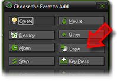
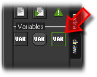
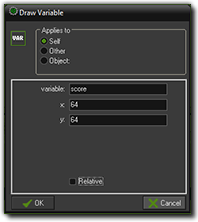

Tutorial
Page 13 of 15
Adding Score
As a next step we want to show the player their score on the screen. For that we are going to have to use
the Draw Event. Now, there is no need to create another object for this as we already have an
object available : the obj_Music. It's always a good idea to try and limit the objects that you
have in your games to only those you need, and as one object can do multiple things, we can use this one for the
music and to draw the score! Such objects are usually called controller objects as they
control parts of the game but are not direct gameplay elements.
Open the obj_Music object and create a draw event now.

Since score is a variable, you now need to go to the Control tab and drag the draw variable
action into the newly added draw event.

In the draw action, the variable to draw is "score" and the x and y should be set to 64 each, which will draw the score
in the top left corner of the room.

If you run the game and click on a few of the fruit instances (and avoid the bombs!) you will see how the score changes,
going up by different amounts depending on the difficulty of the fruit that has been clicked on.
Save your game before continuing.